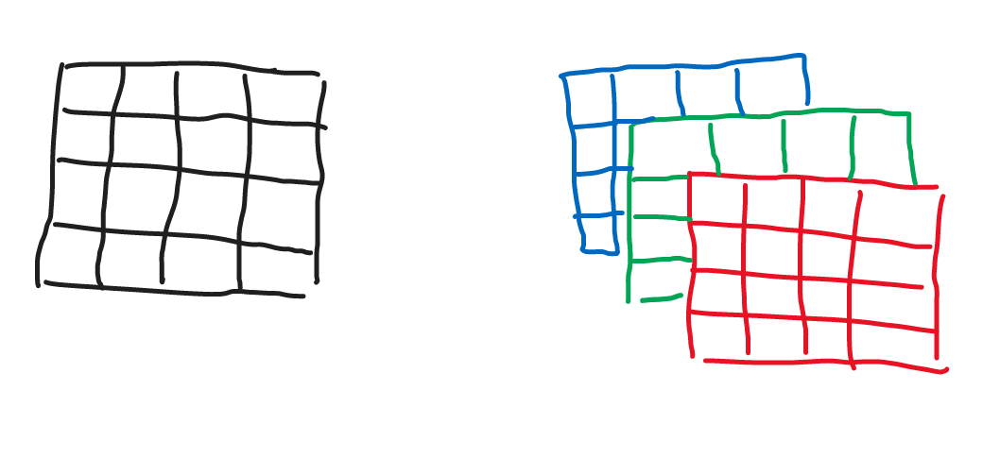
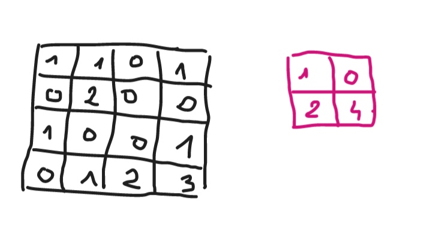
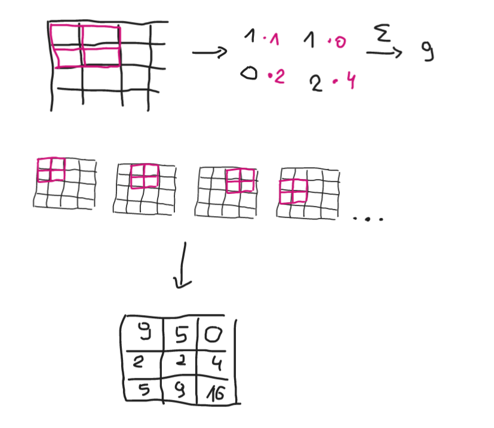
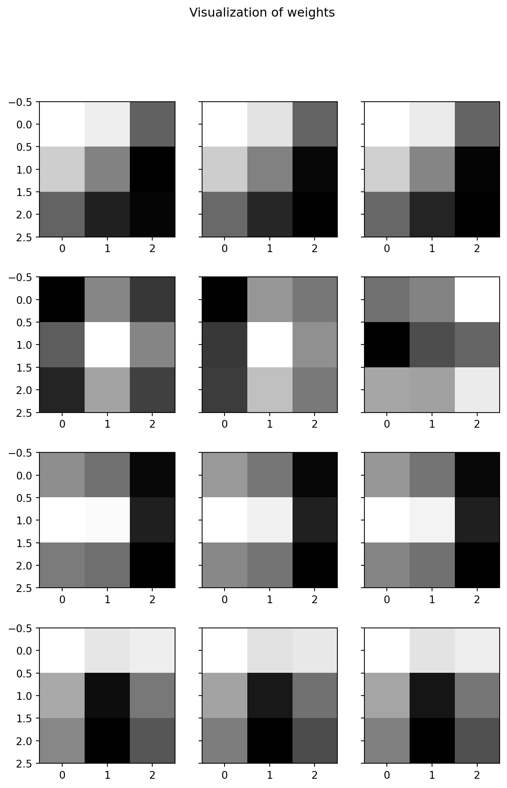
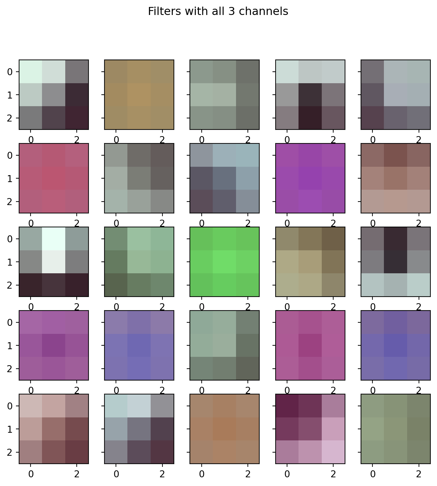

Even though the concept of convolutional neural networks is not new to me, I noticed a gap in my understanding. I couldn’t figure out how to approach visualization of convolutional neural network layers’ weights. It alweays seemed odd to me when I looked at examples found online.
Here I will try to explore the concept to teach myself this interesting thing.
Convolutional neural nets
In convolutional neural networks we operate on images. Each one is 2D grid of values representing every pixel. If the picture is in grayscale we only care for how dark or light each pixel is, so each image is represented as grid \(n_{row} \times n_{col}\) with values representing darkness of each pixel.
If we use color pictures, we divide it into \(3\) channels - red, green, blue. For image with pixel size \(n_{row} \times n_{col}\) we use one grid for red coulour, second for green and third for blue. This means each picture is represented with 3 grids one on top of the other. Dimensionality of this thing is \((n_{row}, n_{col}, 3)\).

Layers of images. On the left grayscale image represented by only one matrix, on the right 3 channels of a colorful image.
Filters
Filters are introduced to smartly downscale an image while distilling the most important information convayed by the image. If we go back to grayscale setting, and assume we have \((n_{row}, n_{col}, 1)\) image, a single grid with pixel values, we introduce filter, for example \(2 \times 2\) matrix that will be put on top of the image, place by place where it fits. Then we will calculate elementwise product of each overlaping entries, sum the values and we will end up with a smaller image.

Example of grayscale image and \(2\times 2\) filter

Applying \(2 \times 2\) filter to the example above.
While constructing a concloutional layer in the model, we specify the size of a filter (\(2 \times 2\), \(3 \times 3\) etc.) and we decide on the number of filters we want to apply. In the example above we used only one filter but we could repeat the above process with the second one with different values than \((1, 0),(2, 4)\). In the example above we got output with dimensions \((3, 3, 1, 1)\). If we chose to apply second filter we would get second result, so overal thing would have dimensions \((3, 3, 1, 2)\). For specified number of filters \(k\) we would get \((3, 3, 1, k)\) dimensional tensor.
Values of the filters are not specified by us before training - they are learned by the model. These are the things we may want ti visualize later to see how the model behaves.
If we take colorful image as input, with size \((n_{row}, n_{col}, 3)\), we construct filters that also have \(3\) channels - for example with size \((2, 2, 3)\). Each of the channels of the filter will be applied to the corresponding channel of a picture, the elementwise product will be calculated for each channel separately, as above. Then, before putting it all to the result matrix, the values will be summed together. We then would get flat \((n_{row}', n_{col}', 1)\) output. As before, we are not only applying one filter on the image - we can to this with many filters (\(k\)), so all of them will be stored as, for example \((2, 2, 3, k)\). And we will get output for each filter, so overal size will be \((n_{row}', n_{col}', k)\)
Get convolutional model
We get a trained model from keras package called VGG16. Out of this model we will look for convolutional layers.
With the explanation of the layers we can look at the layers in this model. First we get an input. Then we have first convolutional layer. From \((3, 3, 3, 64)\) we know that we have here \(3 \times 3\) filters with \(3\) channels (input must be colorful) and the number of these filters is \(64\). After applying these filters on the image \((n_{row}, n_{col}, 3)\) we will get “image” with shape \((n_{row}', n_{col}', 64)\).
In the next layer we will have \(3 \times 3\) filters that will need to deal wtth \(64\)-layer images. We choose to produce \(64\) such filters and so on.
Other layers in this model that appear often are pooling layers. They just take image as it is and create smaller versions of it by taking for each small part of an image the maximum value (MaxPooling) or average value of the piece (AvgPooling). They don’t change depth or number of dimensions. Only 2D shape of an image \((n_{row}', n_{col}') \to (n_{row}'', n_{col}'')\).
At the end of the model we are flattening everything to vectors and create fully connected neural nets to produce predictions at the end.
Plot some filters
We can take the first convolutional layer and take a look at the filters - we have there \(64\) filters, each has 3 channels and each of these channels is just \(3 \times 3\) grid. We can create “heatmap” of this.
Code
import matplotlib.pyplot as pltnum_filters =4fig, axs = plt.subplots(num_filters, filters.shape[2], sharey=True, figsize=(8, 12))fig.suptitle("Visualization of weights")for i inrange(num_filters): filter_0 = filters[:,:,:, i]for j inrange(filter_0.shape[2]): axs[i,j].imshow(filter_0[:,:, j], cmap='gray')

Figure 1: Every row is a visualized \(3 imes 3\) filter with every column being a channel of that filter.
Code
fig, axs = plt.subplots(5, 5, sharey=True, figsize = (8,8))fig.suptitle("Filters with all 3 channels")for i inrange(5):for j inrange(5): axs[i, j].imshow(filters[:,:,:, i*5+ j])

Additional section to play with widgets
Useful links
Picture of the bird: linkutm_source=unsplash&utm_medium=referral&utm_content=creditShareLink